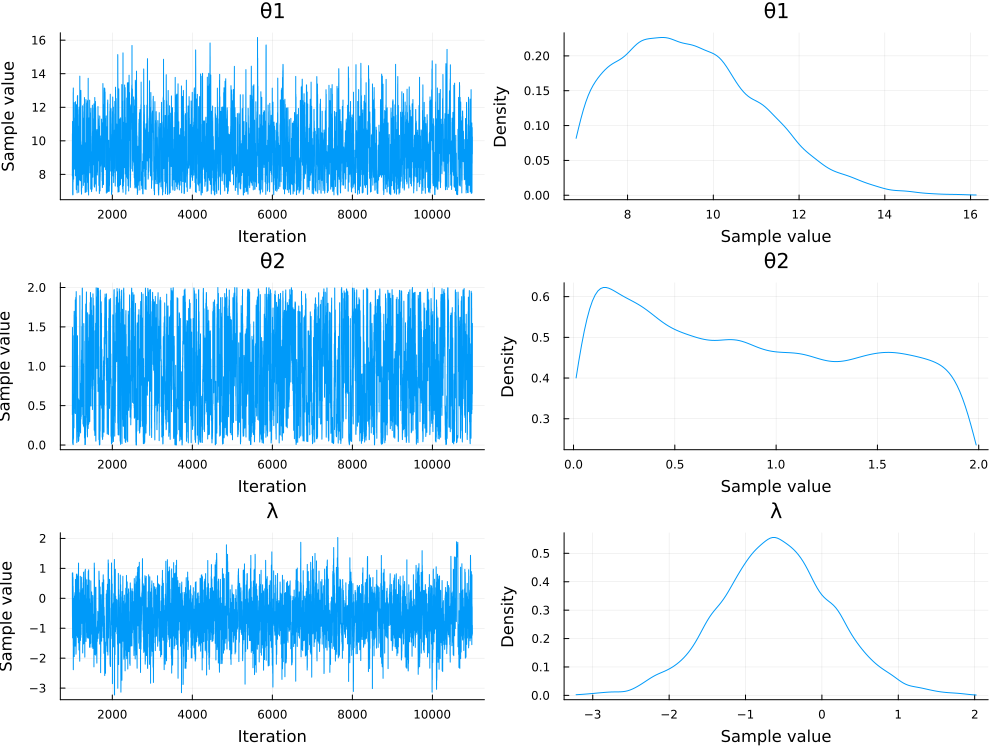
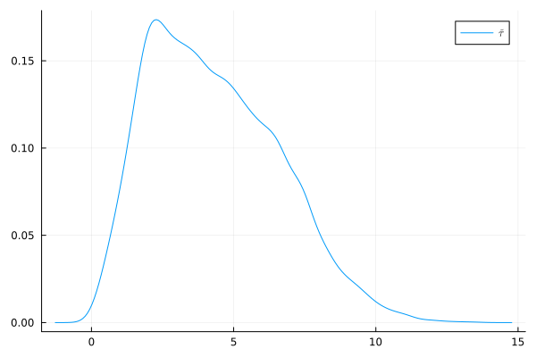
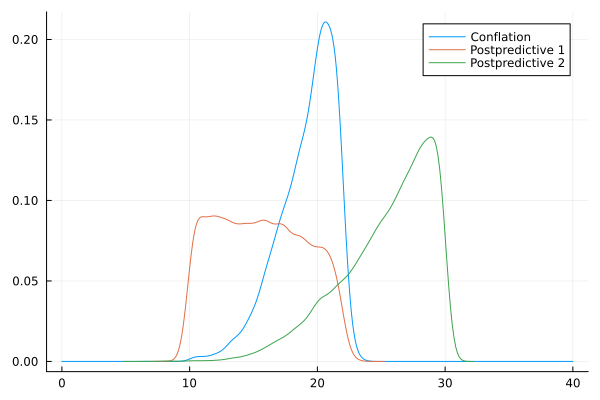

Sampling stratigraphic intervals, posterior predictive distribution, and the time of collections of stratigraphic intervals
This section describes how to sample from the model of stratigraphic interval once we have defined the data and priors. What comes next is to use MCMC sampling for approximating the posterior distribution of parameters.
Going Bayesian for stratigraphic intervals
We can define the posterior distribution of parameters describing a stratigraphic interval as follows:
\[\begin{equation} \begin{aligned} f(\theta_1,\theta_2,\lambda | \boldsymbol{\tau}) = \frac{f(\theta_1) f(\theta_2) f(\lambda) \prod_{i = 1}^{N} f(\tau_i | \theta_1,\theta_2,\lambda)}{\int f(\theta_1) f(\theta_2) f(\lambda) \prod_{i = 1}^{N} f(\tau_i | \theta_1,\theta_2,\lambda) \mathrm{d}\theta_1 \mathrm{d}\theta_2 \mathrm{d}\lambda} \end{aligned} \end{equation}\]
where $f(\theta_1)$, $f(\theta_2)$, and $f(\lambda)$ are the priors of parameters, and $\prod_{i = 1}^{N} f(\tau_i | \theta_1,\theta_2,\lambda)$ is the likelihood function, where data are fixed. Here, the likelihood function is the ThreeParBeta distribution.
Now we can use the function sample_stratinterval which takes an object of type StratInterval as input as well as settings for the MCMC sampling.
It can also define whether we want to sample from the prior, and whether we want to calculate the posterior predictive distribution.
Consider the following example, our vector of occurrences in time is [2.0, 3.1, 3.2, 4.6, 6.77], and we want to use a Normal prior for $\theta_1$, an Exponential for $\theta_2$, and again a Normal prior for $\lambda$:
julia> using Distributionsjulia> using Turingjulia> using StratIntervalsjulia> using StatsPlotsjulia> using Randomjulia> Random.seed!(119)Random.TaskLocalRNG()julia> setprogress!(false)[ Info: [Turing]: progress logging is disabled globally [ Info: [AdvancedVI]: global PROGRESS is set as false falsejulia> data = [2.0, 3.1, 3.2, 4.6, 6.77]5-element Vector{Float64}: 2.0 3.1 3.2 4.6 6.77julia> θ1_prior = Normal(10, 2)Normal{Float64}(μ=10.0, σ=2.0)julia> θ2_prior = Exponential(1)Exponential{Float64}(θ=1.0)julia> λ_prior = Normal(0, 1)Normal{Float64}(μ=0.0, σ=1.0)julia> my_strinterval = StratInterval(data, θ1_prior, θ2_prior, λ_prior)StratInterval(Union{Real, ContinuousUnivariateDistribution, UnivariateDistribution{Continuous}, ContinuousDistribution{Univariate}}[2.0, 3.1, 3.2, 4.6, 6.77], Normal{Float64}(μ=10.0, σ=2.0), Exponential{Float64}(θ=1.0), Normal{Float64}(μ=0.0, σ=1.0))julia> post_samples = sample_stratinterval(my_strinterval, 10000, NUTS(), false, false) # sample from posterior┌ Info: Found initial step size └ ϵ = 0.8 Chains MCMC chain (10000×15×1 Array{Float64, 3}): Iterations = 1001:1:11000 Number of chains = 1 Samples per chain = 10000 Wall duration = 9.08 seconds Compute duration = 9.08 seconds parameters = θ1, θ2, λ internals = lp, n_steps, is_accept, acceptance_rate, log_density, hamiltonian_energy, hamiltonian_energy_error, max_hamiltonian_energy_error, tree_depth, numerical_error, step_size, nom_step_size Summary Statistics parameters mean std mcse ess_bulk ess_tail rhat ⋯ Symbol Float64 Float64 Float64 Float64 Float64 Float64 ⋯ θ1 9.4509 1.6527 0.0560 902.4670 1632.1169 1.0005 ⋯ θ2 0.9698 0.5860 0.0196 854.0681 1137.5306 1.0013 ⋯ λ -0.6121 0.7758 0.0251 988.0057 963.0477 1.0019 ⋯ 1 column omitted Quantiles parameters 2.5% 25.0% 50.0% 75.0% 97.5% Symbol Float64 Float64 Float64 Float64 Float64 θ1 6.9321 8.1375 9.2616 10.5556 12.9925 θ2 0.0442 0.4598 0.9354 1.4857 1.9507 λ -2.1324 -1.1296 -0.6118 -0.1001 0.9030julia> plot(post_samples)Plot{Plots.GRBackend() n=6}julia> savefig("post_samples.svg");julia> nothing

We note a few things about the analysis: First, it took quite little time to run (but this depends on processor architechture, so it's not generalisable). Second, by inspecting the effective sample sizes (ESSs), both bulk and tail, we see they are quite high, (say above 600), and therefore we can suspect we are reaching convergence.
The MCMC sampling, which is done via Turing.jl, returns the samples, provides a nice summary of the sampling, and also allows to actually plot the chains and marginal distributions. From the summary we can also read the posterior mean and quantiles.
Turing.jl is a very powerful probabilistic language for Julia and allows to do many things with posterior samples, so make sure to take a look at their documentation for further details.
Sampling from the prior
We can sample from the priors, which means that during MCMC sampling the value of the likelihood function is always 1.0. This way we can build an unconditional distribution to make sure it represents what we set as prior. We can sample from the prior setting the argument prior = true in sample_stratinterval:
julia> using Distributionsjulia> using Turingjulia> using StratIntervalsjulia> using StatsPlotsjulia> using Randomjulia> Random.seed!(14)Random.TaskLocalRNG()julia> setprogress!(false)[ Info: [Turing]: progress logging is disabled globally [ Info: [AdvancedVI]: global PROGRESS is set as false falsejulia> data = [2.0, 3.1, 3.2, 4.6, 6.77]5-element Vector{Float64}: 2.0 3.1 3.2 4.6 6.77julia> θ1_prior = Normal(10, 2)Normal{Float64}(μ=10.0, σ=2.0)julia> θ2_prior = Exponential(1)Exponential{Float64}(θ=1.0)julia> λ_prior = Normal(0, 1)Normal{Float64}(μ=0.0, σ=1.0)julia> my_strinterval = StratInterval(data, θ1_prior, θ2_prior, λ_prior)StratInterval(Union{Real, ContinuousUnivariateDistribution, UnivariateDistribution{Continuous}, ContinuousDistribution{Univariate}}[2.0, 3.1, 3.2, 4.6, 6.77], Normal{Float64}(μ=10.0, σ=2.0), Exponential{Float64}(θ=1.0), Normal{Float64}(μ=0.0, σ=1.0))julia> prior_samples = sample_stratinterval(my_strinterval, 10000, NUTS(), true, false) # sample from priorChains MCMC chain (10000×4×1 Array{Float64, 3}): Iterations = 1:1:10000 Number of chains = 1 Samples per chain = 10000 Wall duration = 0.2 seconds Compute duration = 0.2 seconds parameters = θ1, θ2, λ internals = lp Summary Statistics parameters mean std mcse ess_bulk ess_tail rhat ⋯ Symbol Float64 Float64 Float64 Float64 Float64 Float64 ⋯ θ1 9.9969 1.9935 0.0202 9710.8226 9602.2249 0.9999 ⋯ θ2 0.9952 0.9979 0.0102 9852.3831 9582.1407 0.9999 ⋯ λ 0.0135 0.9951 0.0100 9922.4059 9798.0272 1.0000 ⋯ 1 column omitted Quantiles parameters 2.5% 25.0% 50.0% 75.0% 97.5% Symbol Float64 Float64 Float64 Float64 Float64 θ1 6.1334 8.6398 9.9656 11.3571 13.9619 θ2 0.0261 0.2799 0.6841 1.3904 3.7261 λ -1.9499 -0.6677 0.0325 0.6844 1.9456julia> plot(prior_samples)Plot{Plots.GRBackend() n=6}julia> savefig("prior_samples.svg");julia> nothing
Calculating the posterior predictive
Now that we have the samples from the posterior distribution of each parameter, we can integrate over them to build a distribution for the time $\tau$, that is, the probability of observing occurrences through time integrating over uncertainty in parameter estimation. Such distribution is the posterior predictive.
We can estimate the posterior distributions and the posterior predictive in one shot, by just setting the argument postpredict = true as follows:
julia> using Distributionsjulia> using Turingjulia> using StratIntervalsjulia> using StatsPlotsjulia> using LaTeXStringsERROR: ArgumentError: Package LaTeXStrings not found in current path. - Run `import Pkg; Pkg.add("LaTeXStrings")` to install the LaTeXStrings package.julia> using Randomjulia> Random.seed!(14)Random.TaskLocalRNG()julia> setprogress!(false)[ Info: [Turing]: progress logging is disabled globally [ Info: [AdvancedVI]: global PROGRESS is set as false falsejulia> data = [2.0, 3.1, 3.2, 4.6, 6.77]5-element Vector{Float64}: 2.0 3.1 3.2 4.6 6.77julia> θ1_prior = Normal(10, 2)Normal{Float64}(μ=10.0, σ=2.0)julia> θ2_prior = Exponential(1)Exponential{Float64}(θ=1.0)julia> λ_prior = Normal(0, 1)Normal{Float64}(μ=0.0, σ=1.0)julia> my_strinterval = StratInterval(data, θ1_prior, θ2_prior, λ_prior)StratInterval(Union{Real, ContinuousUnivariateDistribution, UnivariateDistribution{Continuous}, ContinuousDistribution{Univariate}}[2.0, 3.1, 3.2, 4.6, 6.77], Normal{Float64}(μ=10.0, σ=2.0), Exponential{Float64}(θ=1.0), Normal{Float64}(μ=0.0, σ=1.0))julia> post_predictive = sample_stratinterval(my_strinterval, 10000, NUTS(), false, true) # sample from the posterior predictive┌ Info: Found initial step size └ ϵ = 0.4 (MCMC chain (10000×15×1 Array{Float64, 3}), [5.581406773835338, 2.847423821341468, 5.666637103498823, 3.244284076986596, 2.5982951829965906, 6.811382291575892, 4.751002183324583, 3.2120362881762445, 2.0647904225749514, 2.202070383866207 … 4.18279746541311, 0.5547690735132677, 8.541297140699017, 7.308012163777463, 1.5569880827360434, 1.4602238109839605, 7.30994339956605, 3.112002533122426, 1.403187591112795, 4.51935749427788])julia> density(post_predictive[2], label=L"$\tilde{\tau}$")ERROR: LoadError: UndefVarError: `@L_str` not defined in `Main` Suggestion: check for spelling errors or missing imports. Hint: a global variable of this name may be made accessible by importing LaTeXStrings in the current active module Main in expression starting at REPL[15]:1julia> savefig("postpredict.svg");julia> nothing

Helping reach convergence: Suggestions for effective MCMC
Convergence is a very challenging aspect of Bayesian inference. In theory we can only claim that our approximation of the posterior distributions converged to the target distribution in very specific cases and as sample size grows to infinity. This is of course of little (if any) practical value, as we never can sample to infinity.
I like to use the no-U-turn sampler (NUTS), which is a very effective variant of the Hamiltonian Monte Carlo. Both these are very useful as all of our parameters are continuous. However, we can use any other sampler available from Turing.jl such as the Hamiltonian Monte Carlo (HMC), Gibbs (Gibbs), random-walk Metropolis-Hastings (MH), etc. We can try to use different samplers which may show different sampling efficiency in different situations and models. More efficient samplers mean better convergence.
Another way of rising the ESS values is by letting the chains run by longer. Consider the following example, and compare it with our first run above:
julia> using Distributionsjulia> using Turingjulia> using StratIntervalsjulia> using StatsPlotsjulia> using Randomjulia> Random.seed!(44)Random.TaskLocalRNG()julia> setprogress!(false)[ Info: [Turing]: progress logging is disabled globally [ Info: [AdvancedVI]: global PROGRESS is set as false falsejulia> data = [2.0, 3.1, 3.2, 4.6, 6.77]5-element Vector{Float64}: 2.0 3.1 3.2 4.6 6.77julia> θ1_prior = Normal(10, 2)Normal{Float64}(μ=10.0, σ=2.0)julia> θ2_prior = Exponential(1)Exponential{Float64}(θ=1.0)julia> λ_prior = Normal(0, 1)Normal{Float64}(μ=0.0, σ=1.0)julia> my_strinterval = StratInterval(data, θ1_prior, θ2_prior, λ_prior)StratInterval(Union{Real, ContinuousUnivariateDistribution, UnivariateDistribution{Continuous}, ContinuousDistribution{Univariate}}[2.0, 3.1, 3.2, 4.6, 6.77], Normal{Float64}(μ=10.0, σ=2.0), Exponential{Float64}(θ=1.0), Normal{Float64}(μ=0.0, σ=1.0))julia> post_samples = sample_stratinterval(my_strinterval, 1000, NUTS(), false, false) # sample from posterior┌ Info: Found initial step size └ ϵ = 3.2 Chains MCMC chain (1000×15×1 Array{Float64, 3}): Iterations = 501:1:1500 Number of chains = 1 Samples per chain = 1000 Wall duration = 0.19 seconds Compute duration = 0.19 seconds parameters = θ1, θ2, λ internals = lp, n_steps, is_accept, acceptance_rate, log_density, hamiltonian_energy, hamiltonian_energy_error, max_hamiltonian_energy_error, tree_depth, numerical_error, step_size, nom_step_size Summary Statistics parameters mean std mcse ess_bulk ess_tail rhat e ⋯ Symbol Float64 Float64 Float64 Float64 Float64 Float64 ⋯ θ1 9.8537 1.6407 0.1874 79.2509 119.4541 1.0145 ⋯ θ2 1.0196 0.5843 0.0613 92.4226 227.9255 1.0110 ⋯ λ -0.6489 0.6039 0.0713 73.3889 75.7698 1.0019 ⋯ 1 column omitted Quantiles parameters 2.5% 25.0% 50.0% 75.0% 97.5% Symbol Float64 Float64 Float64 Float64 Float64 θ1 6.9924 8.6712 9.8317 10.9611 13.4152 θ2 0.0918 0.5402 0.9700 1.5988 1.9319 λ -1.9181 -1.0742 -0.5980 -0.2557 0.4942julia> plot(post_samples)Plot{Plots.GRBackend() n=6}julia> savefig("lowess_samples.svg");julia> nothing
As we can see, the ESS values are quite low compared to our original ones, and the trace plots show less "random" behaviour of the sampled parameter values. These two are signs of poor convergence. Just letting the sampling to run by longer had the effect of improving convergence.
Calculating $\tau$ for a collection of stratigraphic intervals
Now that we can calculate posterior distributions and posterior predictives, let us combine these tools for collections of stratigraphic intervals to build a distribution of the co-occurrence time.
In this setting we have two stratigraphic intervals, each of which is a vector of time occurrences. We will set priors on each group of parameters, and sample from the posteriors. Then we will calculate the posterior predictive of each interval and finally combine them using conflation.
julia> using Distributionsjulia> using Turingjulia> using StratIntervalsjulia> using StatsPlotsjulia> using Randomjulia> Random.seed!(67)Random.TaskLocalRNG()julia> setprogress!(false)[ Info: [Turing]: progress logging is disabled globally [ Info: [AdvancedVI]: global PROGRESS is set as false falsejulia> ndata = 100;julia> iters = 10000; # first intervaljulia> true_lambda_1 = 0;julia> true_theta2_1 = 10;julia> true_theta1_1 = 22;julia> data_1 = rand(ThreeParBeta(true_theta1_1, true_theta2_1, true_lambda_1), ndata); # second intervaljulia> true_lambda_2 = 1;julia> true_theta2_2 = 15;julia> true_theta1_2 = 30;julia> data_2 = rand(ThreeParBeta(true_theta1_2, true_theta2_2, true_lambda_2), ndata); # specifying each StratInterval objectjulia> interval_1 = StratInterval(data_1, Normal(22, 3), Exponential(10), Normal(0,3));julia> interval_2 = StratInterval(data_2, Normal(30, 3), Exponential(15), Normal(1,3)); # construct the vector of StratIntervalsjulia> vecinterval = [interval_1, interval_2]; # MCMC sampling and posterior predictivejulia> mystratint_postpredict_vec = sample_stratinterval(vecinterval, iters, NUTS(), false, true); # now calculate the conflation of posterior predictives for the collection interval_1, interval_2┌ Info: Found initial step size └ ϵ = 0.8 ┌ Info: Found initial step size └ ϵ = 0.4julia> xx = 0:0.01:40;julia> yy = map(x -> tau_collection(mystratint_postpredict_vec, x), xx);julia> plot(xx, yy, label="Conflation")Plot{Plots.GRBackend() n=1}julia> density!(mystratint_postpredict_vec[1][2], label="Postpredictive 1")Plot{Plots.GRBackend() n=2}julia> density!(mystratint_postpredict_vec[2][2], label="Postpredictive 2")Plot{Plots.GRBackend() n=3}julia> savefig("tau_collection.svg");julia> nothing
